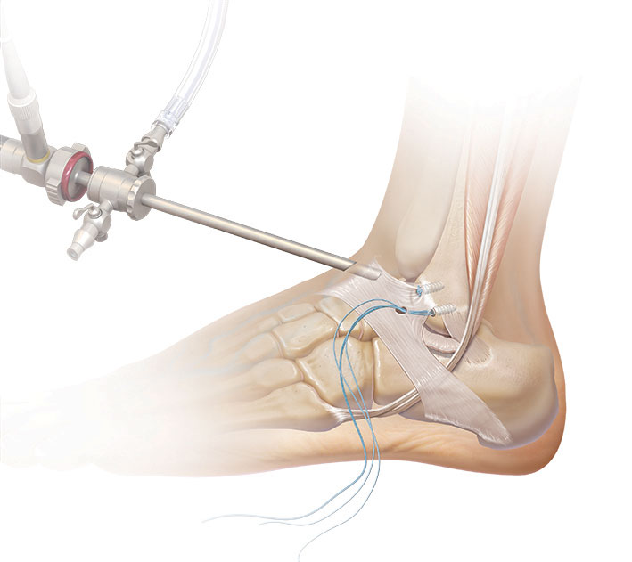

Instabilité de cheville
L’instabilité de la cheville se manifeste par un dysfonctionnement de l’articulation, qui devient “lâche” et effectue des mouvements anormaux. Cette condition, également appelée laxité ou hyperlaxité, résulte d’un manque de stabilité assuré normalement par les ligaments, les tendons et l’emboîtement des os. Une cheville stable est essentielle pour un bon fonctionnement du pied et une marche correcte.
L’instabilité de la cheville est souvent liée à une entorse, qui est une blessure des ligaments de la cheville. Cette blessure survient généralement à la suite d’un faux mouvement, comme une torsion du pied vers l’intérieur (mouvement de valgus). Les entorses peuvent varier en gravité, allant d’un léger étirement à une rupture complète ou un détachement des ligaments de l’os. La douleur est intense au moment de l’incident, mais tend à diminuer par la suite.
Traitement non chirurgical
Le traitement non chirurgical permet de renforcer la cheville et la rendre plus stable. Pour permettre au patient de stabiliser sa cheville, le port de semelles orthopédiques est souvent préconisé car cela aide à effacer les désordres du pied en cas de défaut d’axe d’arrière pied. Le traitement non chirurgical englobe donc le port de semelles adaptées à la pathologie, mais également une rééducation spécifique pour aider le patient à se réapproprier les mouvements de sa cheville. Cette rééducation a pour but d’éduquer certains muscles de tendon de la cheville et contribuer à sa stabilité en obligeant ces tendons à se redresser lorsque la cheville subi une torsion brutale. En cas d’absence de réussite du traitement non chirurgical et en cas d’absence de traitement chirurgical, il peut arriver que l’instabilité de la cheville se complique et génère une arthrose de la cheville, ce qui engendre une aggravation de la situation.
ligamentoplastie de la cheville
Lorsque le traitement non chirurgical s’avère insatisfaisant ou insuffisant, le patient sera redirigé vers un traitement chirurgical, qui a pour but de réparer ou remplacer les ligaments déficients.
2 types de chirurgie sont couramment pratiquées, toutes sous arthroscopie afin de permettre de réaliser un bilan diagnostic précis. Il permet en effet de tester les ligaments, analyser le cartilage et constitue le meilleur outil diagnostic.
La première est le « Brostrom Gould » véritable réparation ligamentaire du LTFA (ligament talofibulaire antérieur). Celui-ci est réinséré sur la fibula au moyen de petites ancres résorbables, puis un renfort naturel est appliqué (le rétinaculum des extenseurs). Cette chirurgie ne peut s’envisager qu’en cas de ligament restant de bonne qualité.